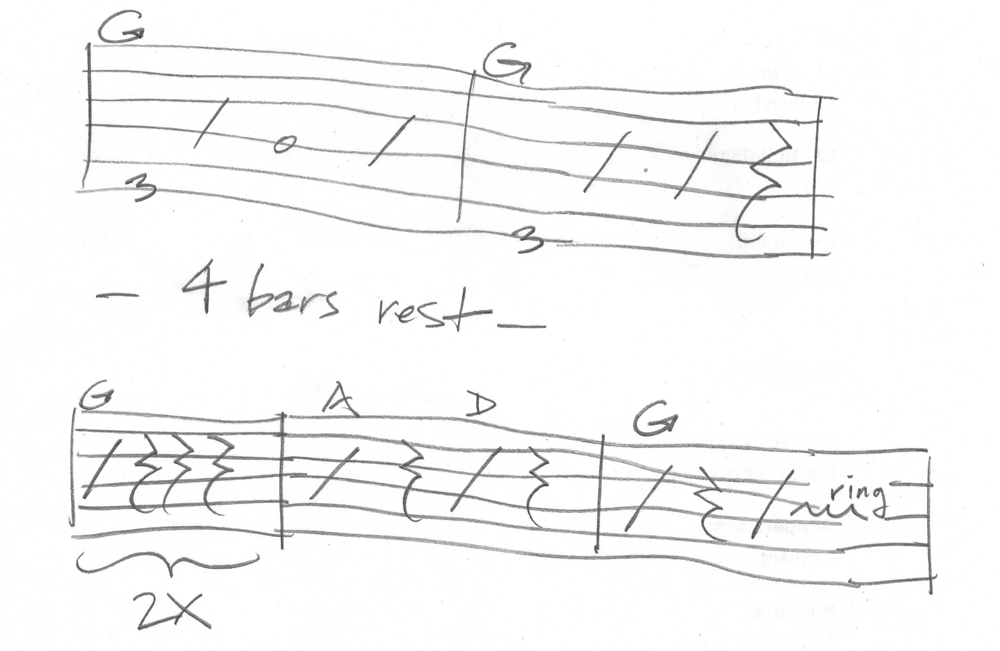

This is the standard arrangement. Elaborate, extend, repeat sections, etc. as necessary. Section A (play through one time): Slow introduction Guitar: G-chord, pick one note at a time Banjo: response Guitar: strum G-C-G Banjo: response Guitar: repeat strum G-C-G Banjo: response Call and response part Guitar: treble string lick Banjo: response Guitar: repeat treble string lick Banjo: response Guitar: Yankee doodle went to town Banjo: riding on a pony Section B (play through twice): Guitar: G chord bass run Banjo: response Guitar: G chord bass run Banjo: response Guitar: C chord bass run Banjo: response Guitar: G chord bass run Banjo: response Guitar: D chord bass run Banjo: response Guitar: strum G-C-G Banjo: response Guitar: repeat strum G-C-G Banjo: response Tempo picks up here... Guitar: treble string run Banjo: response Guitar: treble string run Banjo: response Guitar (and banjo together): Yankee doodle went to town, riding on a pony...then bass run up to C chord for rhythm guitar part Guitar rhythm part: C C G G D D G G C C G G D D G G Section C (ending, play once): G G NC (4 bars) G G A/D G
Note: in some arrangements, the 16-bar guitar rhythm part in section B is repeated immediately on the second time through the section. Also, the first time through the B section, it starts at the slow tempo of the introductory section before picking up speed. The next time(s) through the B section, it is played up to full speed the whole way.